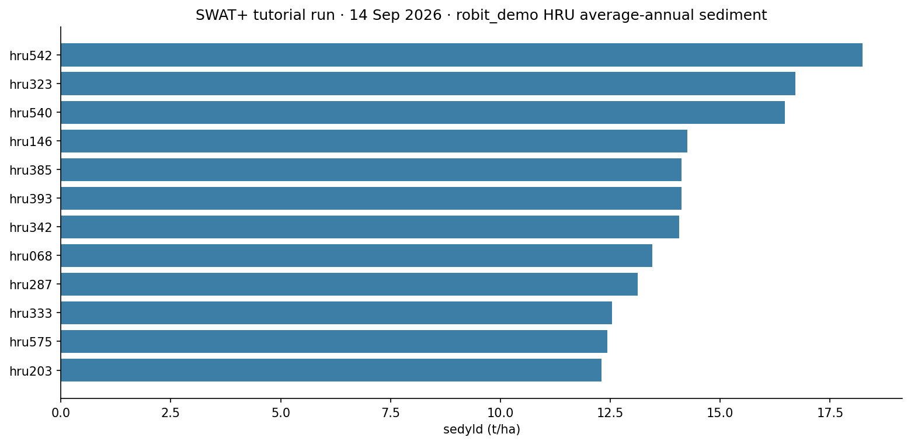
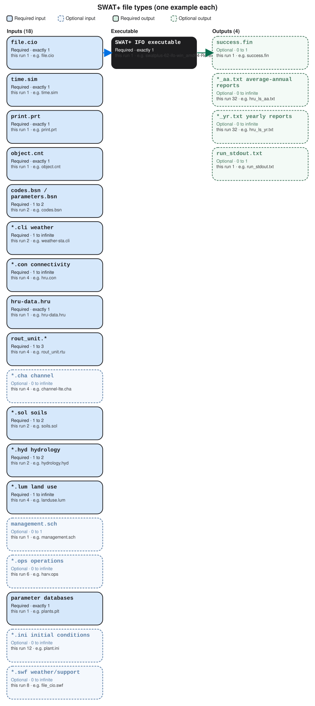

SWAT+
A first successful headless run of SWAT+ revision 62 on Windows. You install the Texas A&M SWAT+ package, copy an exported TxtInOut folder, start the IFO release executable from that folder, and read hru_ls_aa.txt after success.fin appears. SWAT+ Editor and QSWAT+ can build a project; they are not required to finish this tutorial.
1. What this model does
SWAT+ is the current, rewritten Soil and Water Assessment Tool. It is a continuous, daily, watershed-scale ecohydrological model. Land is represented as HRUs, routing units, channels, and aquifers with explicit connectivity files. Sediment on the landscape is still a MUSLE-family estimate. Texas A&M steers new projects here. Classic SWAT2012 remains a separate engine on this lab’s Model page.
The lab’s pinned engine for this tutorial is swatplus-62-ifo-win_amd64-Rel.exe (modular Rev 2026.62). The example is the Robit demonstration watershed exported by SWAT+ Editor v4.0.0.
2. Get the software
Download the SWAT+ installer from Texas A&M. That package includes QSWAT+, SWAT+ Editor, SWAT+ Toolbox, and the model executable. Input/output documentation lives on the SWAT+ GitBook. New projects should start with SWAT+, not SWAT2012.
On this host the tree is already at C:\Grok\Models\installs\SWATplus (installer in archive\downloads\swatplus_installer.zip). If you are repeating the lab path, you can skip the download and use that folder.
3. The lab install
| Piece | Where | First-run role |
|---|---|---|
swatplus-62-ifo-win_amd64-Rel.exe |
SWATPlusEditor\resources\app.asar.unpacked\static\swat_exe\ |
Headless IFO engine. Start it in the TxtInOut folder. |
| Robit TxtInOut | robit_demo\Scenarios\Default\TxtInOut\ |
Editor-exported inputs. file.cio names every table. |
| SWAT+ Editor / QSWAT+ | installer tree | Optional. Used to build or export a project, not to finish this run. |
tools\test_all_models.ps1 runs the IFO exe in the standing Robit folder. The tutorial wrapper copies inputs into a disposable folder first.
4. Novice path: run the Robit export
Copy the TxtInOut inputs (not the old output tables) into a fresh folder, copy the IFO executable beside file.cio, and start it there.
python C:\Grok\Models\tools\run_swatplus_tutorial_verify.py
The engine line is:
.\swatplus-62-ifo-win_amd64-Rel.exe
Stand in the folder that contains file.cio. Do not start the Editor for this check. When the run finishes, success.fin should exist.
5. Confirm the run
Confirm success.fin, then open hru_ls_aa.txt. Each data row is one HRU. The sediment column is sedyld in tonnes per hectare.
| Check | Where | This verification (14 Sep 2026) |
|---|---|---|
| Finished flag | success.fin |
present |
| HRU count | hru_ls_aa.txt |
654 HRUs |
| Highest sediment | sedyld |
hru542 = 18.232 t/ha |
The automated test is inside tools\run_swatplus_tutorial_verify.py. It requires success.fin, a parseable hru_ls_aa.txt, and non-negative sedyld on every HRU.
6. This verification’s figure
The 14 Sep 2026 run wrote average-annual landscape sediment for 654 HRUs. The twelve highest sedyld values are plotted below. The peak is hru542 at 18.232 t/ha.

installs\SWATplus\tutorial_run_20260914. Twelve highest HRU sedyld values from hru_ls_aa.txt.Model Input and Output
Same-type files that only change location or ID are shown once. The count under each name is how few and how many of that type a run can hold. The example name is one file from the verification folder.

Executable
SWAT+ IFO executable
How many: exactly 1. This run: 1. Example: swatplus-62-ifo-win_amd64-Rel.exe.
This is the SWAT+ revision 62 IFO engine. One science binary in the TxtInOut folder. The Editor is optional and is not started here. Open the example file in the verification folder to see that layout on disk.
Input files
file.cio
How many: exactly 1. This run: 1. Example: file.cio.
This is the master control file. It names time, print, objects, climate, connectivity, HRUs, soils, and databases. One cio file. Open the example file in the verification folder to see that layout on disk.
time.sim
How many: exactly 1. This run: 1. Example: time.sim.
This is the simulation period: start date and number of years. One time file. Open the example file in the verification folder to see that layout on disk.
print.prt
How many: exactly 1. This run: 1. Example: print.prt.
This chooses which output tables SWAT+ writes. One print file. hru_ls_aa.txt exists because this file asked for it. Open the example file in the verification folder to see that layout on disk.
object.cnt
How many: exactly 1. This run: 1. Example: object.cnt.
This counts spatial objects: HRUs, routing units, channels, aquifers. One object-count file. Open the example file in the verification folder to see that layout on disk.
codes.bsn / parameters.bsn
How many: 1 to 2. This run: 2. Example: codes.bsn.
These are basin codes and basin parameters for the whole watershed. One or two .bsn files. Open the example file in the verification folder to see that layout on disk.
*.cli weather
How many: 1 to infinite. This run: 2. Example: weather-sta.cli.
These are weather-station and weather-generator files named in file.cio. At least one station file. Extra .cli files if you split climates. Open the example file in the verification folder to see that layout on disk.
*.con connectivity
How many: 1 to infinite. This run: 4. Example: hru.con.
These are connectivity files: how HRUs, routing units, channels, and aquifers send water to one another. One .con file per object class in use. Open the example file in the verification folder to see that layout on disk.
hru-data.hru
How many: exactly 1. This run: 1. Example: hru-data.hru.
This is the HRU table. Many HRUs are rows in this one file, not separate numbered files like SWAT2012. Open the example file in the verification folder to see that layout on disk.
rout_unit.*
How many: 1 to 3. This run: 4. Example: rout_unit.rtu.
These define routing units: definition, elements, and the .rtu table. A small set of files; many units are rows. Open the example file in the verification folder to see that layout on disk.
*.cha channel
How many: 0 to infinite. This run: 4. Example: channel-lte.cha.
These are channel files: initial conditions, nutrients, hydrology-sediment. One type per channel table named in file.cio. Open the example file in the verification folder to see that layout on disk.
*.sol soils
How many: 1 to 2. This run: 2. Example: soils.sol.
These are soil tables. Many soils are rows. Usually soils.sol plus nutrients.sol. Open the example file in the verification folder to see that layout on disk.
*.hyd hydrology
How many: 1 to 2. This run: 2. Example: hydrology.hyd.
These are hydrology and topography tables for HRUs and fields. One or two .hyd files. Open the example file in the verification folder to see that layout on disk.
*.lum land use
How many: 1 to infinite. This run: 4. Example: landuse.lum.
These are land-use and management look-up tables. One file per lum table named in file.cio. Open the example file in the verification folder to see that layout on disk.
management.sch
How many: 0 to 1. This run: 1. Example: management.sch.
This is the management schedule. One schedule file. Operations calendars sit in the .ops files. Open the example file in the verification folder to see that layout on disk.
*.ops operations
How many: 0 to infinite. This run: 6. Example: harv.ops.
These are operation tables: harvest, graze, irrigate, chemical, fire, sweep. One file per operation type in use. Open the example file in the verification folder to see that layout on disk.
parameter databases
How many: exactly 1. This run: 1. Example: plants.plt.
This is the plant database. Fertilizer, tillage, pesticide, urban, septic, and snow tables are the same idea: one file per catalog. Open the example file in the verification folder to see that layout on disk.
*.ini initial conditions
How many: 0 to infinite. This run: 12. Example: plant.ini.
These are initial-condition files for plants, soil, water, salts, and related states. One file per initialized group. Open the example file in the verification folder to see that layout on disk.
*.swf weather/support
How many: 0 to infinite. This run: 8. Example: file_cio.swf.
These are SWAT+ weather or support files the Editor may export beside the named tables. Count grows with optional modules. Open the example file in the verification folder to see that layout on disk.
Output files
success.fin
How many: 0 to 1. This run: 1. Example: success.fin.
This is the finished flag. One file. If it is missing, the engine did not complete the period. Open the example file in the verification folder to see that layout on disk.
*_aa.txt average-annual reports
How many: 0 to infinite. This run: 32. Example: hru_ls_aa.txt.
These are average-annual report tables, one file per print product. hru_ls_aa.txt is the landscape sediment table this tutorial reads. Open the example file in the verification folder to see that layout on disk.
*_yr.txt yearly reports
How many: 0 to infinite. This run: 32. Example: hru_ls_yr.txt.
These are yearly report tables, one file per print product. Same families as the average-annual set when yearly print is on. Open the example file in the verification folder to see that layout on disk.
run_stdout.txt
How many: 0 to 1. This run: 1. Example: run_stdout.txt.
This is console text captured from the IFO executable. One capture. Success is success.fin plus hru_ls_aa.txt. Open the example file in the verification folder to see that layout on disk.
7. After the first success
Once success.fin is there, you can open basin and channel average-annual tables the same way, or rebuild a watershed in QSWAT+. Classic SWAT2012 is a different executable and a different tutorial. This one stops at a verified IFO run of the Robit export.